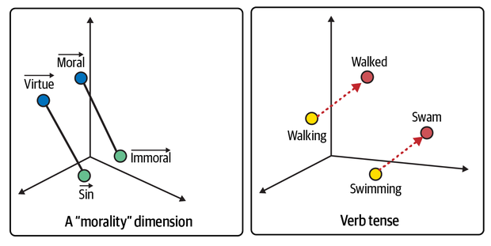

Prompt Engineering Workbook
Introduction
What is Artificial Intelligence (AI)?
The best way to understand artificial intelligence is to think of it as the statistical optimisation of tasks.
The AI tools are created with mathematical models that use training data and algorithms, or recipies, to perform a wide range of tasks. The goal is to reduce or minimise statistical errors.
Decision trees and linear regression are great examples of these algorithms and the way data is used to minimise errors.
What are Large Language Models (LLMs)?

They are are a form of AI that generates text, the basic idea is guessing the next word given a current string of words.
They use Natural Language Processing (NLP), which combines linguistics and mathematics, to represent words (tokens) as vectors or embeddings in a high-dimensional space.
The architecture of these LLMs (often called transformers), is designed to capture semantic and syntactic relations. This means they use the context of words or tokens (and the properties of the vector space) to produce a "better" guess of the next word.
Context plays a crucial role in the meaning of words and ultimately in generating text. Therefore they also have mechanisms (self-attention) to "remember" or more accurately ensure the whole string of tokens in the input text or prompt is accounted for when producing the best guess of the next word.
Practice
Click on the Copilot icon in the top-right corner. Use the area to practice some simple prompts or inputs and see the tools in action. You can try the standard prompts that are suggested in most LLMs: "write a first draft of [topic]" or "teach me something about [topic]".
Try a few times and critically evaluate the outputs before moving forward.
Common Issues
There are some common problems or errors that often occur when using generative AI:
- Hallucinations, sometimes the generated content has errors such as additional fingers in image generation or reference to information that does not exist.
- Bias, the outputs of AI depend on the data it is trained on and it will always have biases from the data (cultural, linguistic, etc...).
- Innacurate, often the text can have inaccuracies and incorrect results (a good example is mathematical problem solving and reasoning).
- Vague and Generalised, most often the outuputs are general and vague since the training data is extremely vast.
It is always good to remember statistical pitfalls that are present with any statistical approach.
For example, the average height in Denmark is extremly different from the average height in Guatemala.
Another important statistical fact is that 95% confidence intervals fail 5% of the time!
The most important thing to remember with any AI tool is that "critical analysis and skeptisism are key!"
For most applications it is crucial that you take ownership of the work, you are the only one accountable for the inclusion of AI outputs in your work. Ensure that you utilise AI critically, ethically and responsibly.
Additional Info
- James Phoenix Book, a great book to get you started
- 3Blue1Brown, amazing video resources to understand the mathematics behind LLMs
- Prompt Engineering Workshops
- For more information contact: r.ochoa.cabrero@mmu.ac.uk
Prompt Engineering
What is Prompt Engineering?
The term "Prompt Engineering" refers to the method used when dealing with AI tools to consistently produce accurate and reliable outputs.
As we discussed, a fundamental approach is to provide more context in the prompts to approximate the specific region of space (in the high-dimensional vector space) that will produce tokens or words that best approximate our desired outputs.
With this in mind, there are five fundamental principles of prompting that achieve consistent and accurate results:
- Direction and Detail, clear and detailed instructions produce clear and accurate outputs.
- Specific, details and specifics help approximate the context region which results in consistent outputs.
- Examples, providing examples of the desired outputs are extremley helpful to consistently produce the desired format and style.
- Evaluation, critical analysis and evaluation are crucial aspects of the prompting process to identify errors.
- Divide Tasks, it is extremely difficult to accomplish complex tasks in one go, break the problem down into simpler steps.
Prompting Frameworks
There are some useful frameworks that can help remember best practices when prompting generative AI, LLMs in particular. They can be divided in inputs-focused (PREP, RACE and PARE) and output-focused (EDIT)
PREP = Prompt, Role, Explicit, Parameters
and
RACE = Role, Action, Context, Execute
PARE =
Prime (what it knows),
Augment (questions to improve),
Refresh (add relevant text),
Evaluate
EDIT =
Evaluate (check format),
Determine (accuracy and verification),
Identify (bias or misinformation),
Transform, (correct and repeat)
The main points to emphasise are that critical analysis is crucially important and improving the context improves the output.
Practice
Try improving the previous prompt "write a first draft of [topic]" or "teach me something about [topic]". Use these frameworks to add context and see how your outputs improve. Be mindful of the common issues, e.g., biased, vague, innacurate, and try to correct them.
Additional Info
- AI Classroom, a good book on prompting frameworks for students and teachers
- Incomplete Book of AI, another good resource to get started with AI
- Prompt Engineering Workshops
- For more information contact: r.ochoa.cabrero@mmu.ac.uk
Standard Practice
The following sections are standard practice when using LLMs and can help in various kinds of tasks. Each section has a practice aspect included as in the previous sections.
- Context
- Summarising/Chunking
- Text Style Unbundling
- Sentiment Analysis
- Role Prompting
- Least-to-Most
Standard Practice 1: Context
Asking for Context
LLMs are particularly well suited for breaking down the text and its context since they relate vectors or embeddings in a specific region of the high-dimensional space.
We can use Copilot or other LLMs to help us understand complicated topics and give us some advice on learning more about the subject/context.
We can generate complicated text or use a journal article that is difficult to understand:
Engineering Design Journal ArticleOnce you have generated or obtained the difficult text (this could include translations) you can start prompting it for context, a summary or advise on steps to take that will help understand it better (such as background knowledge).
Here is an example of a prompt for the engineering desing paper that can help gain deeper understanding of the text, remember to critically evaluate the output and corroborate with valid sources.
Giving Context to LLMs
An invaluable tip when using LLMs is to ask the tool to what information or context it needs to improve the output. This can significantly help get more consistent and accurate outputs. The following example can help to illustrate this aspect, it is about deciding on programming langagues for a coursework on numerical methods:
From this, evaluate the output carefully and then reply with the required context to obtain an improved output. Here is an example of a follow-up prompt:
Standard Practice 2: Summarising and Chunking
As mentioned previousy, LLMs are particularly well suited to analyse the context and output text in the region of the high dimenisional space. Therefore, it can be an invaluable tool to break down complicated text into manageable "chunks" or summarise paragraphs which helps understand the text significantly.
Using the previous section's article on engineering design, we can break down the text into manageable elements with a summary of each. Here is an example of a prompt to use:
PDF readers are increasingly adopting AI in the software that performs some of these tasks.
Be mindful of number of tokens/words (there might be a limit in some tools).
Standard Practice 3: Text Style Unbundling
LLMs can be used to analyse the style of the text given their ability to categorise the context. It can help you understand the structure, tone, etc... more importantly it helps you remain consistent across several pieces of work (blogs, articles, presentations).
Using the previous section's text (Middle English), we can break down the style which can help replicate it in future work. Here is an example of a prompt to use with the Middle English generated text:
Qualitative Analysis
LLMs are a great tool for sentiment analysis and can be extremely useful for qualitative studies. As before, this is linked to the context and tone.
The following example is situated in the context of processing the feedback from focus group participants:
You can additionally include the following message
As always it is crucially important to remember that critical analysis and evaluation are key. Use the prompting principles and frameworks to ensure your outputs are accurate and consistent.
Standard Practice 4: Role Promptig and Limitations
LLMs are particularly useful to improve our existing work. Outputs are grammatically and linguistically of great quality, moreover, they have syntactical context to help with the structure and provide feedback on written work.
A good example of this is role prompting, or giving the LLM a "voice", which not only immediately provides context but also enables interactions containing structured feedback. This is also a good opportunity to test the limitations of these tools.
The following prompts are an example in which the LLM is given the role of panel reviewer. You can use your own work or generate one using Prompt 4.0 (Material Selection for UAV), Prompt 4.1 is an example of how to assign a role and ask for feedback:
You will notice limitations of the tools, most common are:
- AI rates its own outputs higher than they should
- Superficial "understanding"
- Not critical or accurate in its reflections
- Focused more on structure and grammar than content
These are a consequence of the statistical pitfalls mentioned above. These tools do not "understand" deeply the specific text or subject, they are tailored to gauge generic syntactical, contextual and linguistic structures/relations.
Standard Practice 5: Least to Most (PARE)
One of the benefits of LLMs is their ability to promote learning opportunities in the form of dialogue. This is particularly relevant within the PARE framework, where you first Prime surface knowledge then Augment by asking questions to improve, Refresh with the relevant information and finally Evaluate the output.
As always critical analysis and evaluation are essential for this task, particularly because overreliance on generated text increases the chances of errors. Think of the statistical pitfalls, assuming the chance of errors is 5% (optimistically), after more than 5 prompts the chance of errors overall accumulates to 23%. The analysis of errors is more complicated but this result conveys the underlying issues surrounding their use.
Imagine an example where we are interested in understanding how to implement a PESTLE analysis in Engineering. The following prompts can help as a guide to illustrate the use of this method:
You can add the optional information to the prompt: "What additional information do you need to help me with my project's PESTLE analysis?". It is always useful to improve outputs.
We can add the relevant information (Refresh) and ask to expand on specific aspects of the topic we are interested in:
It is useful to ask the LLM to help us generate a table to organise the information gathered thus far, remember to be specific and explicit:
It is good to evaluate the overall output at this stage and refine the tasks or verify the accuracy. Another useful tip when using this method is to have a structured approach or clearly defined division of tasks to be able to accurately and efficiently improve the outputs and overall work. In this case we can ask for specific examples and sources that will support the work:
Here are some crucial things to remember:
- be critical of the outputs, corroborate with reliable sources, continuously evaluate and check for errors;
- overreliance on generated output increases chances of errors considerably;
- and this method is best used as a guide for independent or collaborative learning.